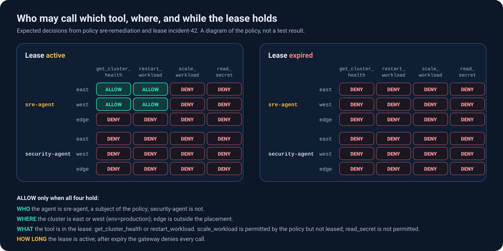

Demo
Try the policy model, watch the lab run, then run it yourself on one machine.
Policy playground
Pick an agent, a tool, a cluster and whether the lease has expired. The playground models the gateway's decision for one call under one active lease, which grants get_cluster_health and restart_workload on the clusters the Placement selects. It asks FleetPermit's four questions in the controller's order, WHO, WHAT, HOW LONG and WHERE, and shows the first one that fails.
It does not model lease admission: whether a lease is Denied or Pending, maxDuration, the 10 second minimum duration, the default duration, or narrowing a lease to fewer clusters.
A model of the policy. It does not contact a Kubernetes cluster.Next to the model's answer, the playground shows the decision recorded for the same combination during the lab run in data/results.json, and links to the end-to-end scenario that exercises it.
Policy modelWhat the policy says
Recorded in the labWhat the gateway actually did
sre-agent may call restart_workload on cluster-east while the lease is active.
- WHO?sre-agent is a subject of the policy.
- WHAT?restart_workload is granted by the active lease.
- HOW LONG?The lease has not expired.
- WHERE?cluster-east is selected by the Placement.
Rule the gateway evaluates on this clusterrequest.mcp.tool_name in ['get_cluster_health', 'restart_workload'] && request.time < timestamp('2026-09-26T10:15:00Z')


Demo recordings
Recordings of real runs of demo/run.sh on the local kind clusters. The overview is demo/run.sh overview, which make demo-run runs. The other two are demo/run.sh security and demo/run.sh disconnect. make demo-videos records all three. The $ command lines are simplified for readability. Every ALLOWED, DENIED and status line is real output from the run. Each recording also has a plain-text transcript, linked under its video.
Reproduce it yourself
Everything above runs on one machine with podman (or docker) and kind. The lab only talks to clusters through its own kubeconfig, never your current context.
You need
- Go (version in
go.mod), Helm and Python 3 - podman, or docker when podman is absent
- kind, kubectl,
clusteradm, jq and curl
With podman the scripts set KIND_EXPERIMENTAL_PROVIDER=podman for you and start the podman machine if it is stopped.
$ git clone https://github.com/fleetpermit/fleetpermit
$ cd fleetpermit
$ make demo-up # 1 hub + 3 managed kind clusters
$ make demo-run # the overview demo: demo/run.sh overview
$ ./demo/run.sh security # or disconnect: the other two recordings
$ make test-e2e # every scenario on the results page
$ make benchmark # latency and simulated scale
$ make demo-down # delete only the clusters this lab createdUnit and integration tests do not need the lab: make test.